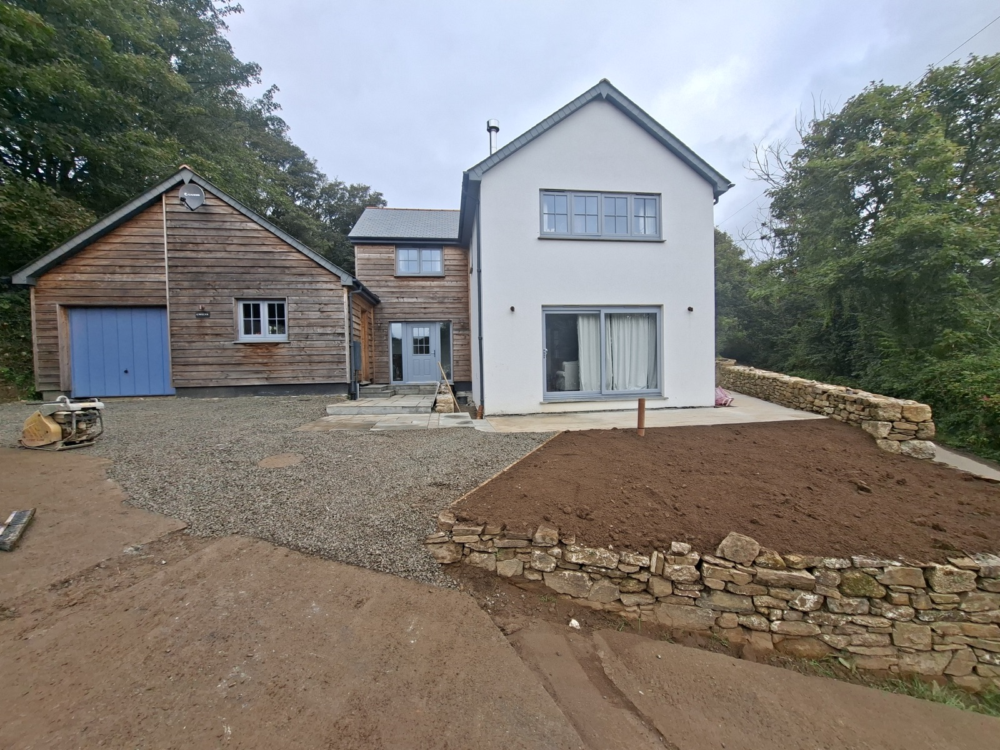

01
Groundworks & Site Preparation
Excavation, levels, ground reduction, access, service routes and prepared working areas for domestic, rural and commercial sites.
Groundworks & construction across Cornwall
Parker Plant & Machinery manages domestic and commercial groundworks projects across Helston and Cornwall. From the initial site visit to completion, we deliver practical, dependable work with care.

Managed From Start To Finish
Parker Plant & Machinery is a Cornwall-based groundworks and construction contractor led by Mike Parker. We work with homeowners, landowners, builders, developers and commercial clients on projects that need a reliable, well-organised team on site.
Our work covers site preparation, drainage, foundations, concrete works, access roads, driveways and external construction. We plan the practical details early, coordinate the work carefully and keep communication clear throughout.
Our machinery is an in-house capability that helps us work efficiently and accurately. It supports the project; it is not the product we lead with.
What We Do
Excavation, levels, ground reduction, access, service routes and prepared working areas for domestic, rural and commercial sites.
Driveway construction, access roads, solid sub-bases, gravel finishes and surfacing preparation built to perform over time.
Complete drainage solutions for storm and foul connections, internal and external runs, septic tanks, soakaways, land drains, deep drainage and plot-wide systems. Planned and installed to keep water moving where it needs to go.
Clearance, vegetation removal, small demolition and strip-out work to prepare land and sites for the next stage.
Foundations and substructures, domestic and agricultural shed bases, large-scale pours, formed and shuttered concrete, retaining walls and durable base work. Proper preparation below ground for work that performs above it.
Paths, patios, retaining features, garden levels and practical outdoor construction that completes the wider project.
Practical ground shaping, garden clearance, planting areas and preparation for landscaping and external improvements.
Accurate trenches for drainage, utilities, pipework and cables, including access-sensitive and occupied sites.
In-House Capability
Our compact Kobelco machinery gives us control over the parts of a project that need precision, restricted access and a tidy working area. It allows the work to progress efficiently without making plant hire the focus of the service.


Built Around The Project
Clear advice and careful delivery for driveways, drainage, foundations, gardens and external improvements.
Reliable site preparation, trenching, bases, levels and external works that keep the wider build moving.
Practical groundworks support for commercial premises, managed sites and contractors who need dependable communication.
Access tracks, clearance, drainage and preparation work that makes land safer, more usable and ready for the next phase.
Why Parker
Recent Construction Work
See a focused selection of genuine work in progress and completed projects. The gallery is split by project type so it is easy to see the range of work we support.
View Construction GalleryCommercial Site Readiness
For commercial, contractor and larger-value work, we bring the training and documentation expected on managed sites, alongside practical experience and clear communication from pre-start through to completion.
Useful Advice
A practical guide covering access, levels, drainage, sub-base preparation and what to check before work begins.
Read blog Drainage SolutionsAdvice for spotting standing water, soft ground, poor falls and drainage issues before they become expensive problems.
Read blog Project PlanningUseful points on access, levels, drainage, services, sequencing and preparation before work starts on site.
Read blogCustomer Reviews
“Had Mike out to fit some new decking in my back garden. Very good price, professional and a nice finish. Highly recommend if you’re about West Cornwall.”
Dan Rowe“Mike did the groundworks for our sunken trampoline and base for a skateboard ramp in Perranporth. He did an excellent job, was well priced and turned up when he said he would. We will definitely be using him again and would highly recommend.”
Tom Leckie“We’re carrying out a renovation and Parker Plant & Machinery saved the day, taking out my old, unlevel flooring and laying a new floor, levelling everything out. Professional, efficient and good price. Highly recommended.”
Alycia Black“All work carried out to a high standard, every stage explained, punctual and honest.”
Christopher Pascoe“Honest, reliable and super friendly service. Great team.”
James Williams“Mike put up a stud wall and door for me. I was very impressed with his punctuality and his workmanship. I would recommend this company.”
Estelle Martin“We recently had Mike build a beautiful decking area for our hot tub, and we couldn’t be happier with the result. The whole project was completed in just one day to a very high standard.”
Gintare Kundrotaite“Professional, efficient, and the attention to detail really shows. Reliable, hardworking, and easy to deal with from start to finish.”
Gintare Kundrotaite“Did a patio for my grandparents. They don’t have Facebook and they are over the moon with it. Brilliant job.”
Josh WebsterAreas We Cover
We cover Helston, Falmouth, Penryn, Redruth, Camborne, Truro, Hayle, Penzance, St Austell and surrounding Cornwall areas.
FAQ
Yes. We work with homeowners, landowners, builders, developers and commercial clients across Helston and Cornwall.
Yes. We handle excavation, foundations, drainage trenches, driveway preparation and wider site preparation across Helston and surrounding Cornwall.
Yes. We can clear vegetation, reshape outdoor areas and prepare gardens for landscaping, patios, decking or future construction.
Yes. We prepare patios, driveways, access roads and gravel surfaces, including excavation, levels, drainage and sub-base work.
Start a Conversation
Share the project type, location, timescale and any site access considerations. Mike will come back to discuss the scope and arrange a site visit where appropriate.